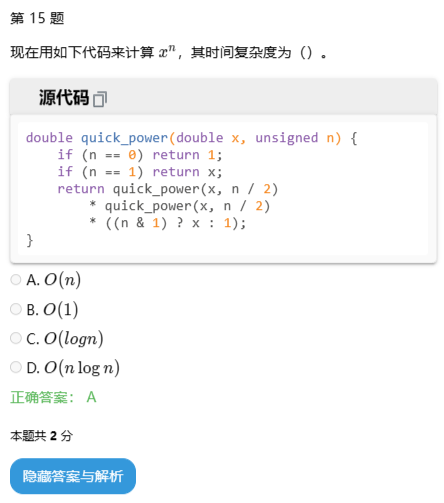

关于多项式
希望别忘的太快……
从多项式说起
在某天，在某个地方，在某个人突然抬起头的时候，他发出尖锐爆鸣：“什么是多项式？”
我们称 $\sum_{i=0}^{n-1} a_i x^i$ 为 $n-1$ 次多项式，其中 $a_i$ 表示多项式系数，$x$ 表示未知数。
可以记 $F(x)=\sum{i=0}^{n-1} a_i x^i，f(x)=\sum{i=0}^{n-1} a_i x^i$。注意大写 $F(x)$ 代表多项式，而小写 $f(x)$ 是个函数，就是说 $f(x)$ 是个值。这是我人为的去区分定义的。实际上，我们的确可以很函数的去考虑多项式。
多项式计算
你要先知道
我为了尽量降低理解难度，会尽量以创造算法者的角度讲述，而不是先丢一大堆知识，让你去理解算法。
实际上求和符号 $\sum$ 的运算优先级相当的低，所以 $\sum A\sum B = \sum (A \sum B)$，其中 $A, B$ 表示一个普通的式子。$\prod$ 也是如此。
加减法
已知 $F(x)=\sum{i=0}^{n-1} a_i x^i,G(x)=\sum{i=0}^{m-1} b_i x^i$，求 $H(x)$，满足 $H(x) = F(x)\pm G(x)$。
令 $n>m$。如果 $b_j$ 不够用 $0$ 补。
时间复杂度 $O(n)$。
乘法（卷积）
已知 $F(x)=\sum{i=0}^{n-1} a_i x^i,G(x)=\sum{i=0}^{m-1} b_i x^i$，求 $H(x)$，满足 $H(x) = F(x)G(x)$。
时间复杂度 $O(nm)$。
快速傅里叶变换(Fast Fourier Transform，FFT)和快速数论变换（Fast Number Theory Transform，FNTT，或简写为NTT）
考虑一个方向
但卷积显然太慢了，所以我们需要优化。
如果我们仅计算 $x=x0$ 处的取值，有 $h(x_0) = f(x_0)g(x_0)$，计算是 $O(1)$ 的。而我们知道，要确定一个 $n-1$ 次多项式，只需要知道 $n$ 个点。而 $H(x)$ 的次数为 $n+m-2$。如果我们先计算对于互不相同的 $x_0,x_1,……,x{n+m-1}$ 的 $f(x_i)$ 和 $g(x_i)$ 的值，分别相乘得到 $h(x_i)$ 的点值，再转换回去……
停一下，仅仅计算 $x=x_i$ 处的取值, 就是 $O(n)$ 的，还要算 $O(n)$ 个？
思路假了？
简单规划
等等，如果，它可以分治？整体降为 $O(n\log n)$
我们可以递归求解，类似于快速幂，在每一层，我们只能让一半的数字进入下一层递归。
那是哪一半呢？由于原多项式的 $n$ 个系数都是必要信息，所以我们只能考虑减少点数。
啊，不是说要确定一个 $n-1$ 次多项式, $n$ 个点一个也不能少吗？
你说的对。但是 $x_i$ 选什么值的权力在我们手上，如果它有特殊性质？
如果那样的话，在下一层递归递归中，点数会减少为一半，为了让每一层面对近似的局面，我们把多项式次数也减少为一半。
啊，不是说要原多项式的 $n$ 个系数都是必要信息吗？
你说的对。但是你不能像某机构那样左右都传吗？

减半次数？
为了在之后方便分治，考虑一个 $n-1$ 次多项式 $F(x)$，令 $n$ 是 $2$ 的整数幂。如果项数不够，系数可以用 $0$ 补上。令 $m=\frac{n}{2}$。
考虑计算时把 $f(x)$ 分成两半，奇偶项分开。
令
那么
如果我们已经求出了 $f_0(x_0)$ 和 $f_1(x_0)$ 的值，由于上式得出 $f(x_0)$ 是 $O(1)$ 的。
时间复杂度 $T(n)=2T(n/2)+O(n)=O(n\log n)$，符合预期。
看回来
那最后，一组什么样的点值才能使得分治正确？
令 $x_i=d(i)$。由于每层多项式的次数在减少，要体现这一点，我们重新令 $x_i=d_n(i)$。
前 $m$ 个点，同样为了让每一层面对近似的局面，令 $d_n^2(i)=d_m(i)$。
后 $m$ 个点，我们希望它能和前面某个点共用同一个 $f_0,f_1$ 的值。于是简单的令 $d_n^2(i)=d_n^2(i+m)$ 即可。由于每一个点互不相同，所以 $d_n(i+m)=-d_n(i)$。同时，既然满足这个条件，$d_n(i)$ 也应该存在周期性，$d_n(i+n)=d_n(i+m+m)=d_n(i)$。
所以
当 $n=1$ 时，只有常数项，$f(i)=a_1$。
还有逆运算
我们拿到一组点值，如何还原回系数？
啊~ ~ ~ ~ ~ ~ ~ ~ ~ ~ ~ （快疯了）
但不是很麻烦了。
还是一个一个来。考虑 $a_k$。我们知道
所以我们想把 $a_k$ 暴露出来
由于我们的操作，现在 $a_k$ 的系数为 $1$，但还有其他的“杂质”。
考虑除杂。我们希望所有“杂质”的系数为 $0$。但这似乎很难办到……我们能先把杂质的系数统一，然后处理吗？
试着对 $d_n^{-i}(i)f(d_n(i))$ 求个和
现在式子右边是 $n$ 倍的 $a_k$ 加上更鬼畜的“杂质”。
如果 $j-k$ 为奇数，那么通过 $d_n(i+m)=-d_n(i)$，
它就没了！
如果 $j-k$ 为不为 $0$ 的偶数……好像没用了。难道要对 $d_n(i)$ 加入新的限制吗？注意，尽管我们可以 DIY $d_n(i)$，但为了避免不必要的麻烦，我们要首先尽量利用已经加入的限制，实在不行才考虑加入一个简单的限制。直接令那一坨为 $0$ 过于抽象。
我们还有 $d_n^2(i)=d_m(i)$，它可以减少指数的质因数 $2$ 的个数。$j-k$ 的范围是 $[-n+1，n-1]$，$n$ 还是 $2$ 的整数次幂，$j-k$ 中的质因数 $2$ 的个数严格比 $n$ 中的少。笑死，打不过，我还耗不过？所以它也没了。
整理一下
我们需要快速的逆变换，如果能套用正变换那就最好。对比一下正变换的式子
除了问题不大的常数 $\frac{1}{n}$，还有 $d_n^{-k}(i)$ 和 $d_n^i(k)$ 上的区别。
为了消除这个区别，我偷个懒（实在没办法），令 $d_n^j(i)=d_n^i(j)$。当 $j=1$ 时，$d_n(i)=d_n^i(1)$，更进一步的，令 $t_n^i=d_n(i)$。于是在括号里的数和在指数位上的数有了同等待遇。
正变换
逆变换
相当于说，我们只需要走一遍正运算，正运算在递推 $t_n^{ik}$ 时改为除法，最后乘上 $\frac{1}{n}$即可。
注入灵魂
第 $i$ 个点为 $t_n^i$ 也就是说，我们对点值有三个限制：
- $t_n^i$ 互不相同。
- $t_n^{2i}=t_m^i$。
- $t_n^{i+m}=-t_n^{i}$。
还由第三点可知：$t_n^i$ 以 $n$ 为周期。
有什么是具有周期性还互不相同的呢？
你脑袋里有没有这样一个东西呢？
如果没有，那你之前的数学知识有认真学吗？
不逗你了，满足条件的很多，比较好用的，有复平面上的本原单位根和模意义下的原根。不过这属于你学到这里就应该知道的东西，他们本身不属于这个算法，我不会对他们本身细讲。
细说本原单位根
注意：此小节中的 $i$ 均为虚数单位 $i$。
不妨先看看复数。
记 $w_n = e^{i\frac{2\pi}{n}}$。它是一个本原单位根，所以它的 $0$ 到 $n-1$ 次方互不相同，然后 $w_n^n = 1 = w_n^0$，存在周期性变化。
还有
和
让 $t_n=w_n$，没有问题！
这就是 FFT。
细说原根
不妨先看看原根。
对于模数 $p$，设其原根为 $g$，记 $g_n=g^{\frac{p-1}{n}}$。这需要 $n$ 整除 $p-1$，又因为 $n$ 是 $2$ 的整数次幂，所以质数 $p$ 要满足 $p=r\times 2^k+1$，$2^k$ 要足够大。出题人一般用 $998244353 = 7 \times 17 \times 2 ^ {23} + 1 $。
一些可用的质数：
| prime | r | k | g |
|---|---|---|---|
| 23068673 | 11 | 21 | 3 |
| 104857601 | 25 | 22 | 3 |
| 167772161 | 5 | 25 | 3 |
| 469762049 | 7 | 26 | 3 |
| 998244353 | 119 | 23 | 3 |
| 1004535809 | 479 | 21 | 3 |
| 2013265921 | 15 | 27 | 31 |
| 2281701377 | 17 | 27 | 3 |
| 3221225473 | 3 | 30 | 5 |
| 75161927681 | 35 | 31 | 3 |
| 77309411329 | 9 | 33 | 7 |
| 206158430209 | 3 | 36 | 22 |
| 2061584302081 | 15 | 37 | 7 |
| 2748779069441 | 5 | 39 | 3 |
| 6597069766657 | 3 | 41 | 5 |
| 39582418599937 | 9 | 42 | 5 |
| 79164837199873 | 9 | 43 | 5 |
| 263882790666241 | 15 | 44 | 7 |
| 1231453023109121 | 35 | 45 | 3 |
| 1337006139375617 | 19 | 46 | 3 |
| 3799912185593857 | 27 | 47 | 5 |
| 4222124650659841 | 15 | 48 | 19 |
| 7881299347898369 | 7 | 50 | 6 |
| 31525197391593473 | 7 | 52 | 3 |
| 180143985094819841 | 5 | 55 | 6 |
| 1945555039024054273 | 27 | 56 | 5 |
| 4179340454199820289 | 29 | 57 | 3 |
它满足我们的要求：
和
让 $t_n=g_n$，没有问题！
这就是 NTT。
Idea is shit.Shou me you code.
接下来搬出古神的 FFT
1 |
|
空间优化
第一项是优化空间复杂度。我们发现在递归时要开大量辅助空间，这是 $O(n \log n)$ 的，很不友好。而我们在遇到递归算法时，一般都会想到用递推来减小常数。于是我们考虑将自顶向下的递归（改革）改成自底向上递推（革命）。
先分析一下递归过程。
1 | 0： 0 1 2 3 4 5 6 7 |
在第 i 轮，我们把每一组中 $2$ 进制下从低到高第 $i$ 位为 $0$ 的数放左边，为 $1$ 的数放右边。像极了基数排序，只不过是把 $2$ 进制翻转后排的。于是我们可以省去辅助空间。
这里用我自己的 NTT 代码。我使用了我的取模类。
1 | inline void calrev() |
还有常数优化
啊啊啊，自己找别人问去。